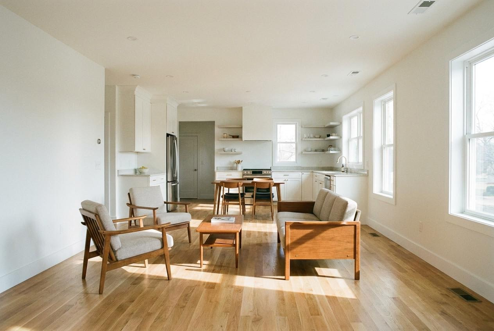

Getting the moisture out covers just part of the work. After readings return to normal, the bare subfloor, cut-out drywall and missing floors still need attention. The repair phase is where reconstruction happens. For Winchester homeowners, our crew installs replacements for anything unsalvageable and blends them with the existing finishes until the space stops looking like a job site.
No two repair jobs are the same size. A minor loss can need just a couple of feet of wallboard plus baseboard and a coat of paint. At the bigger end, expect doors, trim, cabinet boxes, hardwood or laminate flooring, subfloor, full drywall sheets and insulation. Our aim is a like-for-like replacement, and when a true match cannot be found we say so directly and let you decide.
We do not close anything in while it is still damp. A moisture meter has to show normal levels in the subfloor and framing before new material is installed. Mold hidden in a newly painted wall usually traces back to someone covering damp lumber. We also give you a written scope and a schedule before work starts, so you know what is being rebuilt and in what order.

Water Damage Repair, Step by Step
We follow a proven process to ensure every job is completed to the highest standards. Here's what you can expect when you choose Winchester Restoration:
Verify Dryness First
Final moisture readings are taken on the subfloor, framing and any drywall left in place. Only when each material reads normal does rebuilding start, which keeps damp spots from being sealed inside.
Write the Scope
Each room is itemized in a document showing replacements, the materials chosen and how long we expect it to take. If a claim is open, we line the scope up with the adjuster.
Reconstruct and Install
Insulation goes back into open cavities, drywall is hung, taped and finished, and subfloor is repaired. Next come cabinets, flooring and trim, installed in a sequence that keeps finished surfaces protected.
Finish and Walk Through
Texture is matched, walls are primed and painted, and baseboards, doors and hardware go back on. Together we then walk through each room, and every listed item is corrected before the job is closed.
Ready to Solve Your Water Damage Repair Problem?
Get a free estimate from our expert team today.
Get Help: (209) 721-9606Why Hire a Professional for Water Damage Repair?
This is not the same as a standard renovation project. The person rebuilding needs to know what the water did, where it went and whether the structure behind the wall is truly dry. We build from the moisture records made during drying, which tell us the studs that got wet, the subfloor that was treated and the spots needing a second look. With that history in hand, problems do not get buried under fresh paint and new drywall.
Then there is the craft of making things match. If the patch stands out, it reminds you of the damage daily. Wall texture is blended, paint is feathered out to natural breaks, and flooring is sourced to line up with the boards already there when available. If nothing matches, you get options from us, for example new flooring run to a doorway. Permits, where required for the work, are handled by us, and your insurer stays informed.
Signs You Need Water Damage Repair in Winchester
Recognizing the warning signs early can save you time, money, and prevent significant damage to your property. Here are the most common indicators that it's time to call a professional:
- Since the water damage, certain doors drag on the jamb or miss the latch.
- Hardwood boards have cupped, crowned or lifted and did not flatten after drying.
- Paint is bubbling, peeling or stained brown where water ran down the wall.
- A leak overhead left the ceiling drywall cracked, sagging or falling apart.
- Tiles sound hollow, have come loose or show cracked grout since water got beneath them.
- Flooring flexes more than it should in the spot that was flooded.
- During drying, sections of wallboard came out and the framing is still exposed.
Early Action Saves Money
Many water damage problems start small but can escalate quickly into costly emergencies. If you notice any of these signs, contact Winchester Restoration at (209) 721-9606 for a prompt evaluation.
Your Water Damage Repair Questions Answered
Want a Professional Opinion?
We provide honest advice and free estimates on all water damage repair work.
Call (209) 721-9606 TodayHow to Prevent Water Damage Repair Problems
Taking preventive measures can help you avoid costly water damage issues down the road. Here are our expert recommendations:
- Use moisture resistant drywall and backer board when rebuilding bathrooms, kitchens and laundry rooms.
- Give fresh paint, caulk and flooring adhesive time to cure before wet mopping or heavy use.
- Rebuilt bathroom walls last longer when the exhaust fan runs through and after each shower.
- Ask for final moisture readings before any contractor closes up a wall or floor.
- Completed-repair photos and the scope document belong in your home records.
- Fix the source first, and only then patch or paint a water stain.
Comparing DIY and Professional Water Damage Repair
While some minor restoration tasks can be handled by handy homeowners, most water damage work requires professional expertise, specialized equipment, and proper safety training. Here's a comparison:
| Factor | DIY Approach | Professional Service |
|---|---|---|
| Wall finish | Patch outline shows through paint | Seams taped, texture matched |
| Dryness check | Looks dry, so it must be | Readings taken before anything is covered |
| What is behind the wall | Covered over without knowing | Moisture history guides the rebuild |
| Schedule | Several weeks of spare weekends | Trades booked in the right sequence |
| Permits and approvals | Up to you to figure out | Required permits taken care of |
Talk to a Water Damage Repair Expert
The sooner you call, the sooner we can help. Reach Winchester Restoration for same-day service.
Call (209) 721-9606 Now